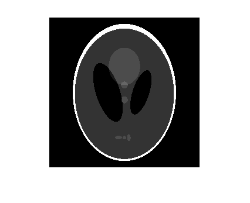
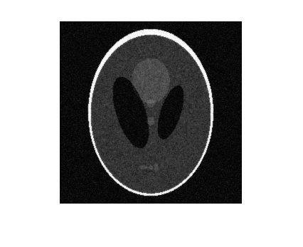
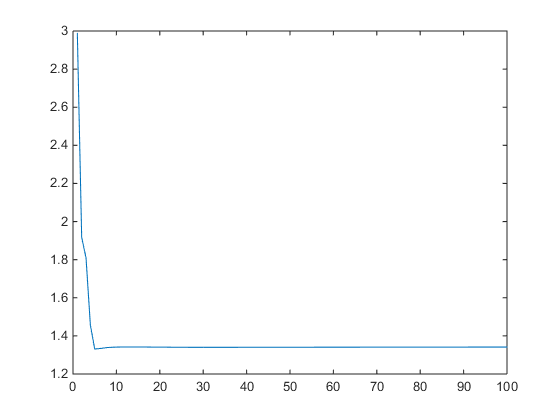
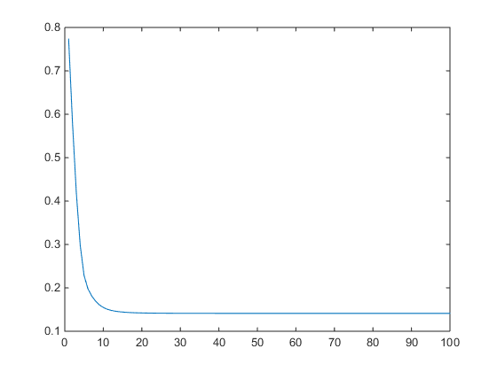
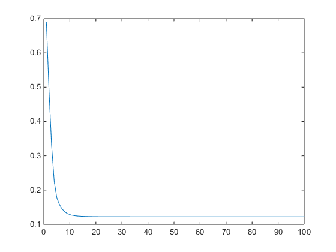

Contents
addpath 'mrf'; addpath 'mrf_derivatives'; addpath '../../common/'; load('../data/assignmentImageDenoisingPhantom.mat');
Part (a)
The RRMSE between Noisy and Noiseless image
display(abs(rrmse(imageNoiseless, imageNoisy)));
ans =
0.3364
Part (b)
best_alpha = 0.89; best_gamma = 0.5; algorithm = 1; [estimate_algorithm_1, e, e1, e2, e3, e4, series_1] = ... runGradientDescents(imageNoisy, imageNoiseless, ... algorithm, best_alpha, best_gamma); errors = [best_alpha, best_gamma, e, e1, e2, e3, e4]; % Errors for Quadratic MRF model % a b RRMSE(a, b) RRMSE(1.2a, b) RRMSE(0.8a, b) RRMSE(a, 1.2b) RRMSE(a, 0.8b) display(errors); best_alpha = 0.032; best_gamma = 0.0070; algorithm = 2; [estimate_algorithm_2, e, e1, e2, e3, e4, series_2] = ... runGradientDescents(imageNoisy, imageNoiseless, ... algorithm, best_alpha, best_gamma); errors = [best_alpha, best_gamma, e, e1, e2, e3, e4]; % Errors for Huber MRF model % a b RRMSE(a, b) RRMSE(1.2a, b) RRMSE(0.8a, b) RRMSE(a, 1.2b) RRMSE(a, 0.8b) display(errors); best_alpha = 0.003; best_gamma = 0.007; algorithm = 3; [estimate_algorithm_3, e, e1, e2, e3, e4, series_3] = ... runGradientDescents(imageNoisy, imageNoiseless, ... algorithm, best_alpha, best_gamma); errors = [best_alpha, best_gamma, e, e1, e2, e3, e4]; % Errors for Adaptive MRF model % a b RRMSE(a, b) RRMSE(1.2a, b) RRMSE(0.8a, b) RRMSE(a, 1.2b) RRMSE(a, 0.8b) display(errors);
errors =
0.8900 0.5000 0.2285 5.3304 0.2485 0.2285 0.2285
errors =
0.0320 0.0070 0.0698 0.0700 0.0699 0.0705 0.0701
errors =
0.0030 0.0070 0.0722 0.0722 0.0722 0.0731 0.0727
Part (c)
Noiseless
figure; imshow(abs(imageNoiseless)); % Noisy figure; imshow(abs(imageNoisy)); % Quadratic MRF figure; imshow(abs(estimate_algorithm_1)); % Huber MRF figure; imshow(abs(estimate_algorithm_2)); % Adaptive MRF figure; imshow(abs(estimate_algorithm_3)); 
Part (d)
Quadratic MRF
figure; plot(1:100, series_1); % Huber MRF figure; plot(1:100, series_2); % Adaptive MRF figure; plot(1:100, series_3);  